Cozinha tradicional portuguesa servida a poucos passos do castelo, no coração da vila que Afonso Henriques conquistou.
1148foi o ano em que Óbidos passou para as mãos do primeiro rei de Portugal, depois de séculos sob domínio mouro. A vila que daí nasceu, murada, estreita e virada para dentro, é hoje uma das mais visitadas do país, e é dentro dela, na Rua Josefa de Óbidos, que se encontra o Conquistador.
A cozinha segue a tradição portuguesa sem pressa: frango na púcara, dourada escalada, tábuas de carne e petiscos pensados para se partilharem à mesa. O espaço combina paredes antigas com um ambiente acolhedor, com lugar dentro de portas e esplanada para os dias de sol.
O nome é uma homenagem simples à história da vila que o rodeia, e o brasão à porta, escudo e espada, é o mesmo que recebe quem entra desde a Rua Josefa de Óbidos.
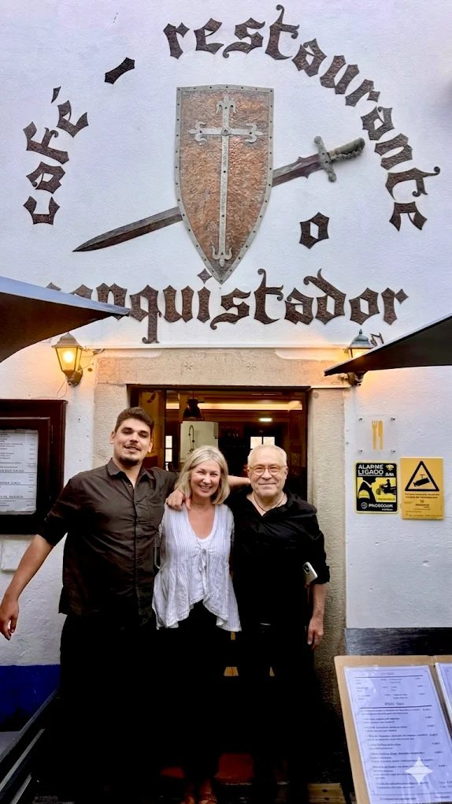
Peixe fresco grelhado, marisco, carnes na brasa e os clássicos da casa. Pratos pensados para comer devagar, como manda a tradição.
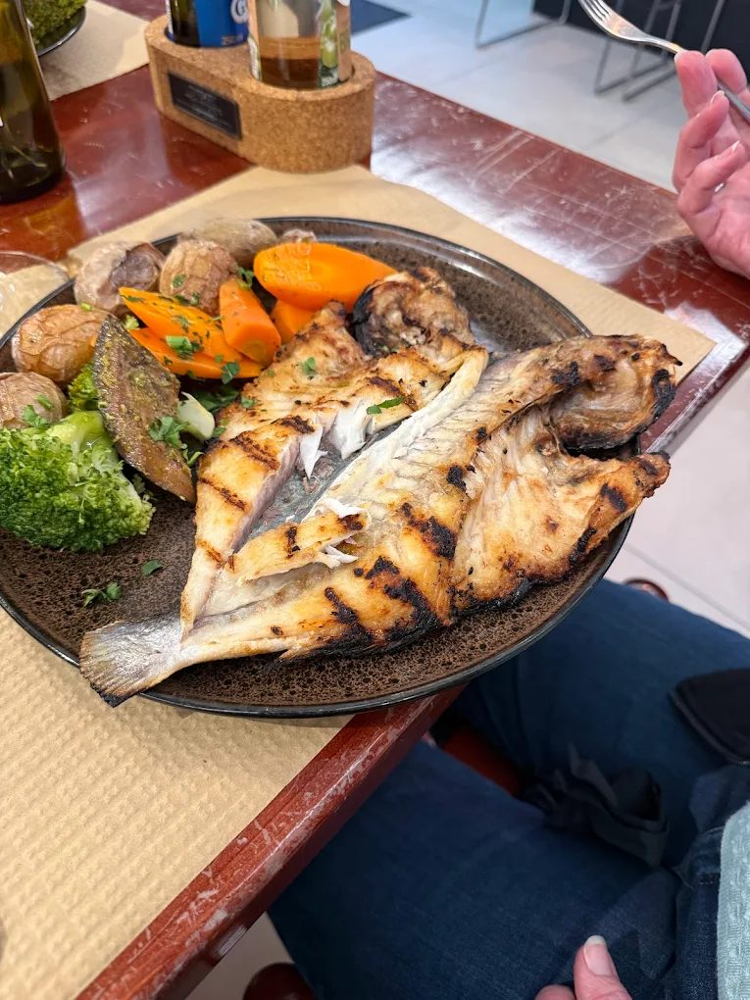
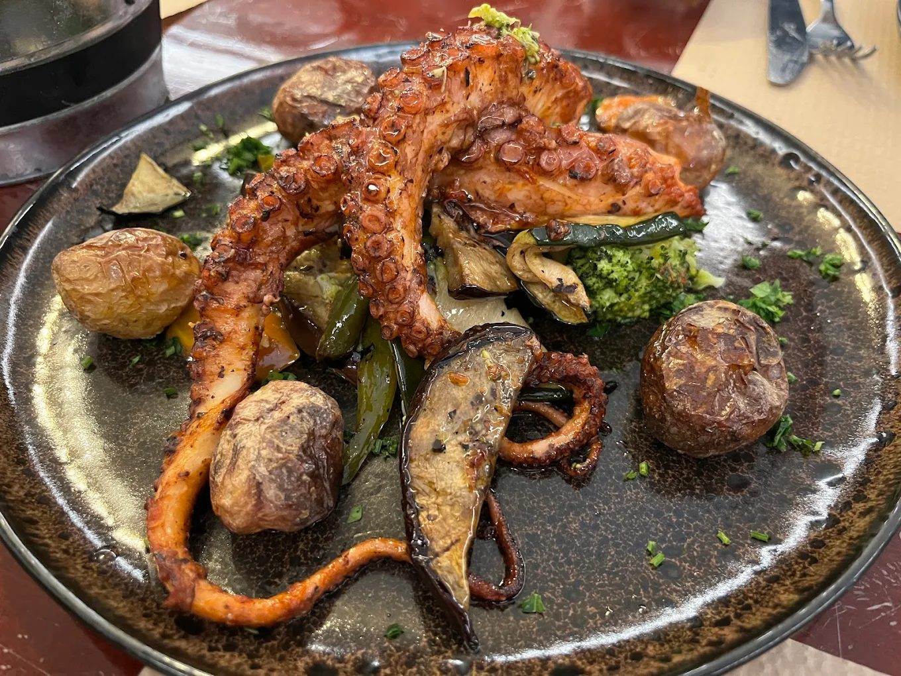
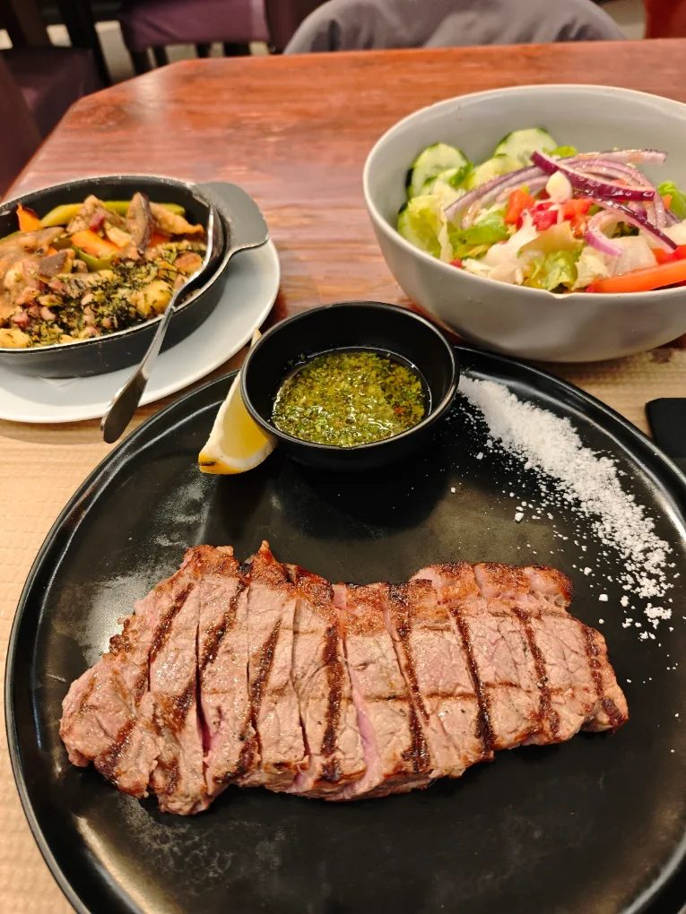
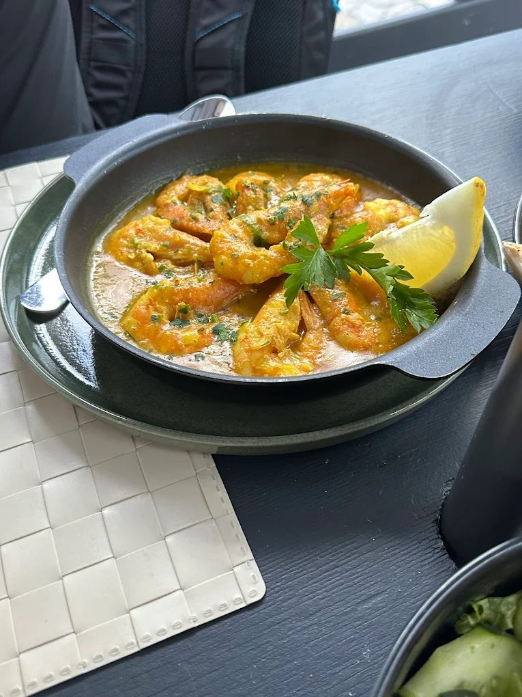
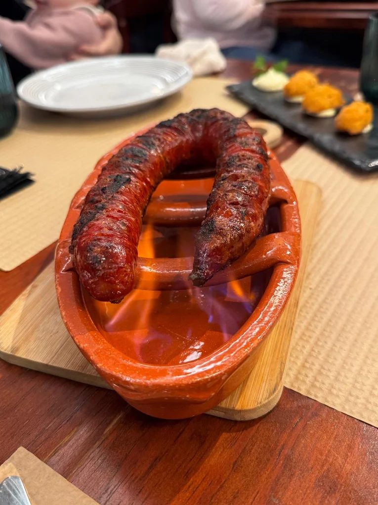
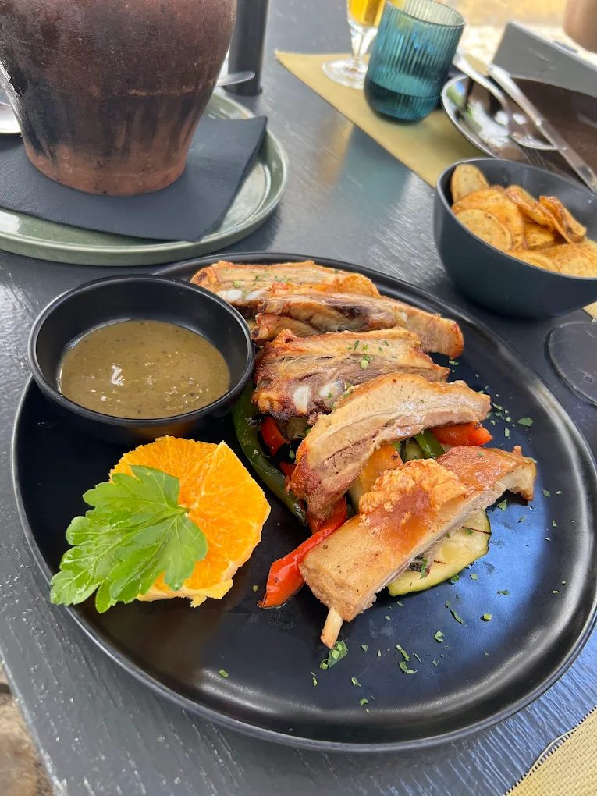
Ementa completa disponível à mesa e sujeita a variação sazonal.
Preço médio por pessoa, segundo o TheFork: cerca de 24 €.
O ambiente é muito agradável, acolhedor e combina perfeitamente com a qualidade da comida. Foi uma experiência que superou as nossas expectativas.
Avaliação Tripadvisor, julho de 2026O staff foi impecável connosco e o ambiente é muito acolhedor, ideal para um almoço ou jantar em família.
Avaliação Tripadvisor, junho de 2026Restaurante super agradável pertinho do castelo. Atendimento impecável, os pratos uma delícia.
Avaliação TheFork, setembro de 2026Comida muito bem confecionada, serviço rápido e funcionários simpáticos. Voltarei.
Avaliação TheFork, agosto de 2026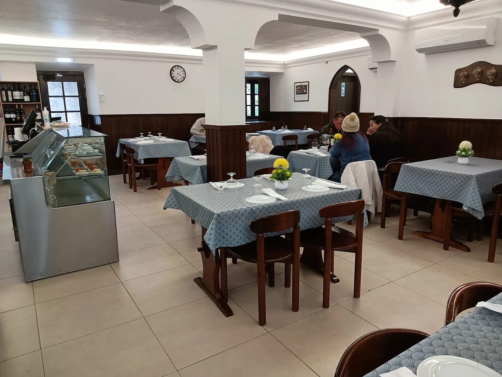
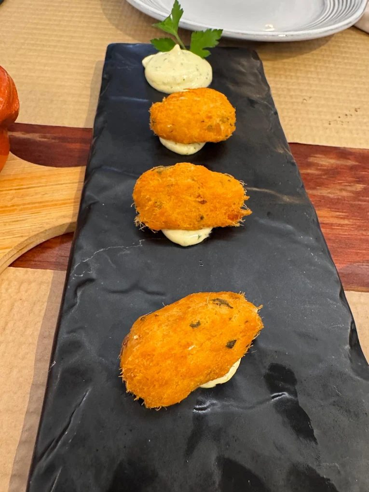
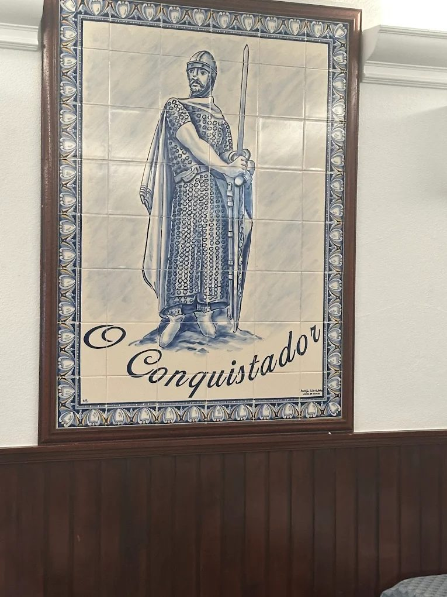
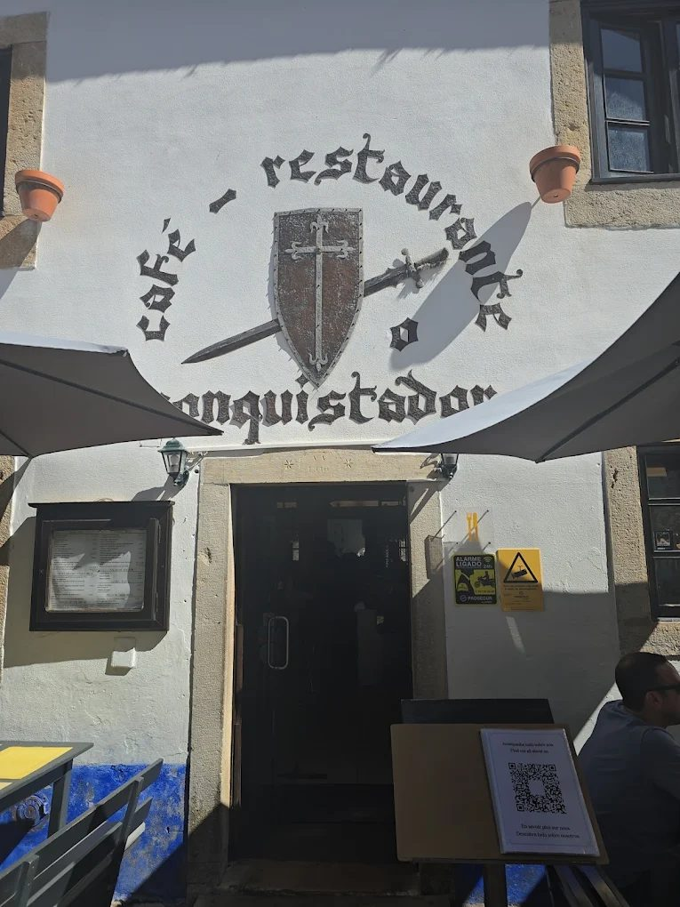
| Segunda a domingo | 11:30 – 23:00 |
Rua Josefa de Óbidos, 20
2510-077 Óbidos
262 959 528
1148restauranteconquistador@gmail.com